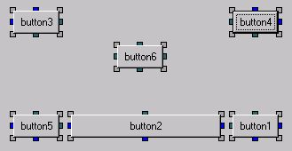
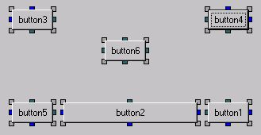

|
Layout Anchors are based on Delphi's Anchors and implemented with
wxLayoutConstraints and defined in wxPython.lib.anchors.LayoutAnchors.
Anchored sides maintain the distance from the edge of the
control to the same edge of the parent.
When neither side is selected, the control keeps the same
relative position to both sides.
At design time anchors can be set and cleared by right clicking on
a Selection Tag and toggling the Anchored popup menu.
To remove already set Anchors, click on the Ellipsis button of the
Anchors property in the Inspector. This will delete the anchors
or create new default anchors.
When using anchors at run-time, remember that the current position
and size of the control and it's parent is used when setting up
the constraints.
To change the size or position of an already anchored control,
set the constraints to None, reposition or resize and reapply the anchors.
 Stretched -> 
Stretched -> These are the default colours:
| Anchored | Unanchored |
|